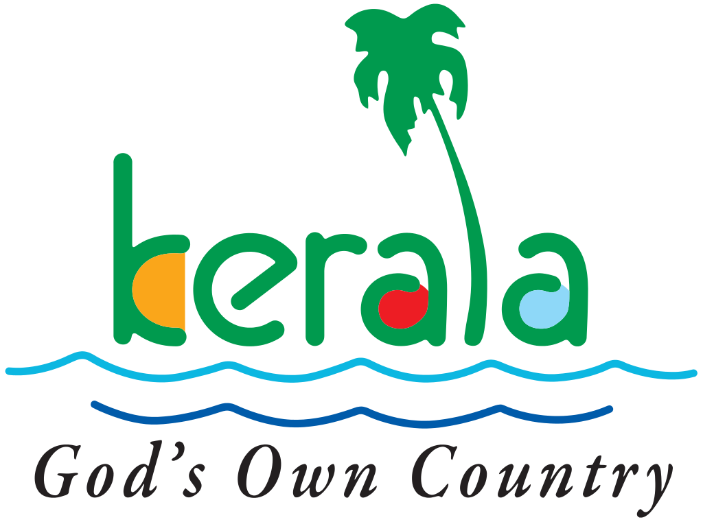
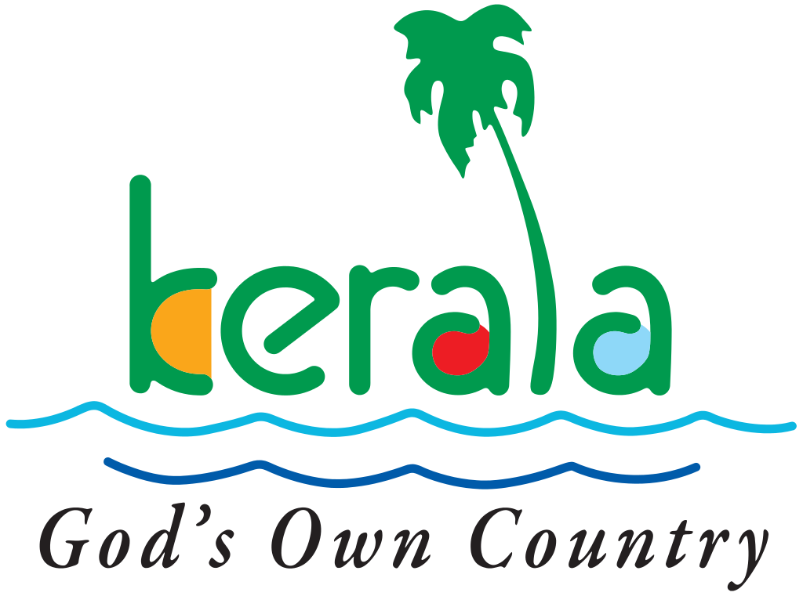

CONTACT US
 

HISTORY HISTORY HISTORY HISTORY HISTORY HISTORY HISTORY HISTORY HISTORY HISTORY HISTORY HISTORY HISTORY HISTORY HISTORY HISTORY HISTORY HISTORY HISTORY HISTORY HISTORY HISTORY HISTORY HISTORY HISTORY HISTORY HISTORY HISTORY HISTORY HISTORY HISTORY HISTORY HISTORY HISTORY HISTORY HISTORY HISTORY HISTORY HISTORY HISTORY HISTORY HISTORY HISTORY HISTORY HISTORY HISTORY HISTORY HISTORY HISTORY HISTORY HISTORY HISTORY HISTORY HISTORY
Comprising an area of 2,132 sq. kilometres, Wayanad has a powerful history. Historians are of the view that organised human life existed in these parts, at least ten centuries before Christ. Countless evidences about New Stone Age civilisation can be seen on the hills of Wayanad. The two caves of Ampukuthimala located between Sulthan Bathery and Ambalavayal, with pictures on their walls and pictorial writings, speak volumes of the bygone era and civilisation. Recorded history of this district is available from the 18th century. In ancient times, this land was ruled by the Rajas of the Veda tribe. In later days, Wayanad came under the rule of the Pazhassi Rajahs of Kottayam royal dynasty. When Hyder Ali becames the ruler of Mysore, he invaded Wayanad and brought it under his sway. In the days of Tipu, Wayanad was restored to the Kottayam royal dynasty. Thus, Wayanad fell into the hands of the British and with it came a new turn in the Home of this area. The British authorities opened up the plateau for cultivation of tea and other cash crops. Roads were laid across the dangerous slopes of Wayanad, from Kozhikode and Thalassery. These roads were extended to the cities of Mysore and Ooty through Gudalur. Through the roads poured in settlers from all parts of Kerala and the virgin forest lands proved a veritable goldmine with incredible yields of cash crops. When the State of Kerala came into being in November 1956, Wayanad was part of Kannur district. Later, south Wayanad was added to Kozhikode district. In order to fulfil the aspirations of the people of Wayanad for development, north Wayanad and South Wayanad were carved out and joined together to form the present district of Wayanad. This district came into being on November 1, 1980 as the 12 district of Kerala
FESTIVALS FESTIVALS FESTIVALS FESTIVALS FESTIVALS FESTIVALS FESTIVALS FESTIVALS FESTIVALS FESTIVALS FESTIVALS FESTIVALS FESTIVALS FESTIVALS FESTIVALS FESTIVALS FESTIVALS FESTIVALS FESTIVALS FESTIVALS FESTIVALS FESTIVALS FESTIVALS FESTIVALS FESTIVALS FESTIVALS FESTIVALS FESTIVALS FESTIVALS FESTIVALS FESTIVALS FESTIVALS FESTIVALS FESTIVALS FESTIVALS FESTIVALS FESTIVALS FESTIVALS FESTIVALS FESTIVALS FESTIVALS FESTIVALS FESTIVALS FESTIVALS
Karthigai
Karthigai is possibly the only light festival that is celebrated in Malayali houses.
The village temple arranges for a bonfire of useless materials and every family takes a burning torch made of palm leaves (Chootu) from this fire to the house.
Oil lights are lit in houses and the whole town radiates like a bunch of twinkling garlands on the face of dark space, an awesome sight to behold.
The place is ready to hold some of the most famous events in Kerala.
Mahasivarathri
It is an important festival of Hindus and is celebrated in Kumbam (Feb-March).
Mahasivarathri festival commemorates the day on which Lord Shiva consumed the deadly poison (Kalakuda visham) to save the world from destruction.
On this day, people visit all the prominent Shiva temples to offer their prayers to lord Shiva.
Thirunelli Festival
Thirunelli Festival is a two-day festival celebrated on Vishu day and its eve, in the Malayalam month of Medam (April) is the annual festival of Sree Thirunelli Devaswom at Thirunelli in Wayanad.
Papanasini, the holy mountain spring here believed to have the divine power to absolve the soul of all its sins, flows near the shrine.
A sacred rock nearby is the place where ritual offerings are made for the ancestors on the new moon days of Malayalam months of 'Karkkidakam' (July/ August), 'Thulam' (October/ November) and 'Kumbham' (February/ March).
Asthami Rohini
The birthday of Lord Krishna is celebrated with great fervor in the state.
It is celebrated in the month of Chingam (Aug- Sept).
Devotees visit the Krishna temples to offer Pooja and prayers.
Cultural programmes are also held to mark the occasion.
Easter
Is the oldest Christian festival, as old as Christianity itself.
The central tenet of Christianity is not the birth of Jesus, but his resurrection.
Easter is derived from this paschal mystery and from the events of Good Friday.
Christmas
Christmas is an important festival of Kerala.
Christians, all over Kerala, celebrate Christmas on 25th Dec.
During Christmas, holy Mass is held in all the churches of Kerala.
Singing of Christmas carols, setting up of Christmas tree, exchanges of cards, gifts etc form an integral part of Christmas festivities in Kerala.
Bakri Id
Commemorates the sacrifice of Ibrahim in obedience to God's command. Bakri Id is an important festival of Kerala. Muslims enjoy hearty feasts on Bakri id day. Many rich people sacrifice goats and distribute them among friends, relatives and the poor, to mark the occasion.
But apart from the above festivals of Kerala the following are purely the fairs and festivals of Wayanad like Valliyurkavu Bhagavathy Temple festival celebrated in February. Thirunelly Temple festival celebrated in August. Seethadevi Temple festival celebrated in January. Pallikkunnu Church festival celebrated in February. And Nadavayal St.Thomas Church festival celebrated in January.